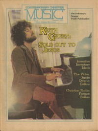

Keith GreenOn the cover
October 1978
Contemporary Christian Music | Media coverage:- Oct 1978 in Contemporary Christian Music "Keith Green"
- Nov 1978 in Campus Life "Spotlight: Keith Green"
- Nov 1978 in Christian Life "Music Makers You Should Know: Totally Committed", by Betty Willems
- May 1979 in Contemporary Christian Music "Keith Green"
- Jul 1979 in Christian Herald "Gospel Artists", by Ron R. Lee
- Mar 1980 in Contemporary Christian Music "A Non-profit Prophet?"
- Nov 1980 in Campus Life "Show Time: Music or Message", by Jim Long
- Jun 1981 in Contemporary Christian Music "Records: Sparrow To Release New Keith Green Album"
- 1981 in New Christian Music "Keith Green"
- May 1982 in Contemporary Christian Music "Keith Green's Mellowed, But He Still Means Business", by John W. Styll
- Jul 1982 in Charisma "Charisma Music's Top 100"
- Sep 1982 in Contemporary Christian Music "A Perplexing Dilemma: Can This Tragedy Be God's Will?", by Kenn Gulliksen
- Sep 1982 in Contemporary Christian Music "News: Investigators Say Plane Overcrowded"
- 3 Sep 1982 in Christianity Today "News: Keith Green, 11 Others, Killed In Plane Crash", by Steve Rabey
- Oct 1982 in Campus Life "Impressions: Keith Green"
- Nov 1982 in Christian Herald "For Prophets Only", by Keith Green
- 1987 in Premiere "Keith Green"
- Dec 1987 in CCM "The Ministry Lives On", by Steve Rabey
- Mar 1988 in Charisma & Christian Life "Music: His Love Breaks Through", by Kenn Gulliksen
- 1988 in Premiere "Keith Green"
- Jan 1989 in CCM "A Question of Motives: Making Music for the Right Reasons", by Mark Pettigrew
- Dec 1989 in Charisma & Christian Life "Books: Keith Green: His Legacy Lives On", by Steve Fry
- 15 Dec 1989 in Christianity Today "Arts: Artbriefs: Uncompromising Keith Green"
- May 1990 in CCM "Musicianaries For Christ: Why Last Days Is Returning To The Mission Field", by David Geisler
- Jul 1992 in CCM "Remembering the Music and Ministry of Keith Green", by Thom Granger
- Jul 1992 in CCM "A Personal Remembrance", by John W. Styll
- Jul 1998 in CCM "The Day The Music Died", by Roberta Croteau
- Dec 1998 in CCM "On The Beat: CD Series to Introduce New Generation to Keith Green's Music"
- Jan 1999 in CBA Marketplace, by Mike Nappa
- Jul 2001 in CCM "All Access: No Compromise On Keith Green Tribute", by Steve Knight, Gregory J. Rumburg
- Dec 2001 in CCM "All Access: History Lesson", by Marcia Bartenhagen
- Nov 2003 in CCM "Hall of Fame: Keith Green", by Michael Ciani
- Aug 2006 in CCM "History Makers: Moments that Shaped CCM: Running To The End of the Highway", by John W. Styll
- Sep 2007 in CCM "Standing Stones: Icons Remembered"
- Jul 2010 in Charisma "Inform: Keith Green to Return Onscreen", by Troy Anderson
- Aug 2015 in Charisma "40 People Who Radically Changed our World: Keith Green", by Diana Simone
Albums & reviews:1976: Live At The Daisy II
1977: For Him Who Has Ears to Hear
1978: Live At Jesus Northwest '78
1980: So You Wanna Go Back to Egypt
1981: The Keith Green Collection
1982: Songs for the Shepherd
1983: I Only Want to See You There
1984: Jesus Commands Us to Go
1987: The Ministry Years, Volume 1
1987: The Ministry Years, Volume 2
1996: Keith Green Live (His Incredible Youth)
1998: Because of You: Songs of Testimony
1998: Make My Life a Prayer to You: Songs of Devotion
1998: Oh Lord, You're Beautiful: Songs of Worship
1998: Here Am I Send Me: Songs of Evangelism
2002: Ultimate Collection
2008: The Live Experience
Award Summary (Nominations / Wins)
Dove AwardsBooks about Keith Green
- "Music and Mammon: Entertainment or Ministry?" in Contemporary Christian Music (Paul Baker, 1985).
- "Keith Green" in The Encyclopedia of Contemporary Christian Music (Mark Allan Powell, 2002).
- "Keith Green" in The Billboard Guide to Contemporary Christian Music (Barry Alfonso, 2002).
Published articles:1 article credited in Christian Herald: 1982.2 articles credited in HM: 1988 - 1991. |